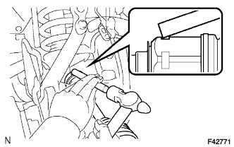
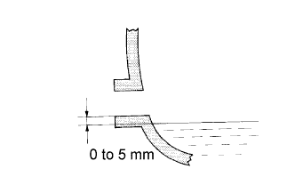

FRONT DRIVE SHAFT ASSEMBLY > INSTALLATION |
| 1. INSTALL FRONT DRIVE SHAFT ASSEMBLY |
|  |
Coat the spline of the inboard joint shaft assembly with ATF.
Align the shaft splines and install the drive shaft with a brass bar and hammer.
| 2. INSTALL FRONT SPEED SENSOR |
Install the speed sensor with the bolt.
| 3. INSTALL FRONT LOWER BALL JOINT ATTACHMENT LH |
Install the front lower ball joint attachment with the 2 bolts.
| 4. CONNECT TIE ROD END SUB-ASSEMBLY LH |
Connect the tie rod end to the steering knuckle with the nut.
Install a new cotter pin.
| 5. INSTALL FRONT AXLE SHAFT NUT |
Clean the threaded parts on the drive shaft and axle shaft nut using a non-residue solvent.
Install the front axle shaft nut.
Install the adjusting cap and a new cotter pin.
| 6. INSTALL FRONT AXLE HUB GREASE CAP |
Install the axle hub grease cap.
| 7. FILL UP DIFFERENTIAL OIL |
Remove the differential filler plug and gasket.
|  |
Pour oil into the differential carrier assembly so that the oil level is within 0 to 5 mm (0 to 0.197 in.) of the bottom of the filler plug opening.
| Oil Type and Viscosity | Specified Condition |
| Toyota Genuine Differential gear oil LT SAE 75W-85 API GL-5 or equivalent | 1.35 to 1.45 liters (1.43 to 1.53 US qts, 1.18 to 1.27 Imp. qts.) |
| Oil Type and Viscosity | Specified Condition |
| Toyota Genuine Differential gear oil LT SAE 75W-85 API GL-5 or equivalent | 2.65 to 2.75 liters (2.80 to 2.91 US qts, 2.33 to 2.42 Imp. qts.) |
Install a new gasket and the differential filler plug.
Drive the vehicle and check the oil level again.
If necessary, add differential oil.
| 8. INSPECT DIFFERENTIAL OIL |
Stop the vehicle on a level surface.
Remove the differential filler plug and gasket.
Check that the oil level is within 0 to 5 mm (0 to 0.197 in.) of the bottom of the filler plug opening.
Install a new gasket and differential filler plug.
| 9. INSTALL FRONT WHEEL |
| 10. CHECK FRONT SPEED SENSOR |
Check the front speed sensor signal (Click here).